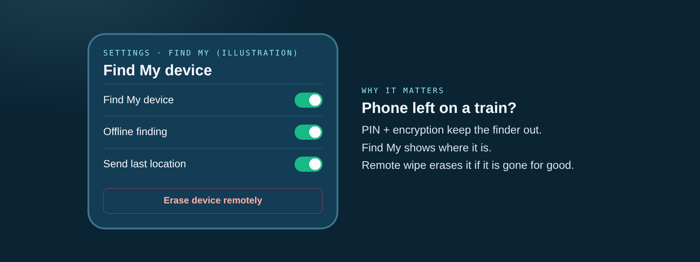

Device security
Your phone and laptop hold your whole digital life. Lock them, encrypt them, know how to find them.

Securing physical devices with PINs, disk encryption, and remote wipe capabilities.
Checklist
| Phone | Laptop |
|---|---|
| PIN of 6+ digits, auto-lock 30 s | Password + auto-lock |
| Encryption on (automatic with PIN) | FileVault / BitLocker on |
| Find My + remote wipe | Find My Device |
| Apps only from official store | Software only from trusted sources |
| Own charger or power bank | Updates on |
Based on the Swiss NCSC's nine tips for secure mobile phone use.
Example
A phone left on a train. With a PIN, encryption and Find My, the owner erases it remotely and the finder sees nothing.
Quick tips
- Set a strong PIN and auto-lock.
- Turn on Find My and remote wipe.
- Install apps only from the official store.